한국사능력검정시험-심화 (2022-02-12 기출문제)
1. (가) 시대의 생활 모습으로 옳은 것은? [1점]
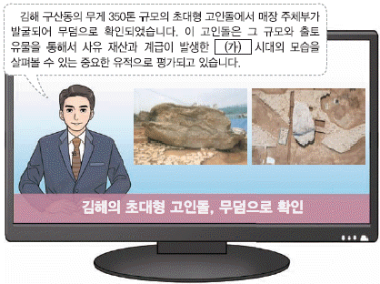
- 소를 이용한 깊이갈이가 일반화되었다.
- 주로 동굴이나 강가의 막집에서 살았다.
- 반달 돌칼을 사용하여 곡식을 수확하였다.
- 실을 뽑기 위해 가락바퀴를 처음 사용하였다.
- 주먹도끼, 찍개 등의 뗀석기를 만들기 시작하였다.
(정답률: 86%)

2. 밑줄 그은 '이 나라'에 대한 설명으로 옳은 것은? [1점]
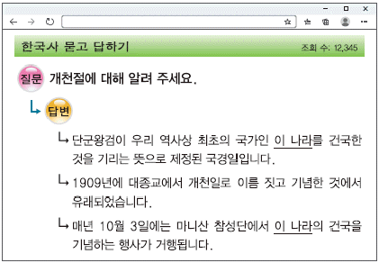
- 백제와 연합하여 금성을 공격하였다.
- 마립간이라는 왕의 칭호를 사용하였다.
- 빈민을 구제하기 위해 진대법을 실시하였다.
- 목지국을 압도하고 지역의 맹주로 발돋움하였다.
- 살인, 절도 등의 죄를 다스리는 범금 8조가 있었다.
(정답률: 91%)
3. (가), (나) 나라에 대한 설명으로 옳은 것은? [2점]
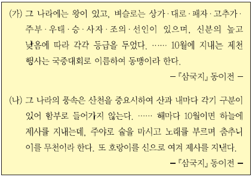
- (가) - 낙랑과 왜에 철을 수출하였다.
- (가) - 서옥제라는 혼인 풍습이 있었다.
- (나) - 연의 장수 진개의 공격을 받았다.
- (나) - 가(加)들이 별도로 사출도를 다스렸다.
- (가), (나) - 골품에 따라 관등 승진에 제한이 있었다.
(정답률: 85%)
4. 밑줄 그은 '이 불상'으로 옳은 것은? [3점]
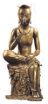
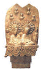
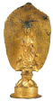
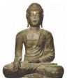
(정답률: 81%)
5. (가) 왕의 업적으로 옳은 것은? [2점]
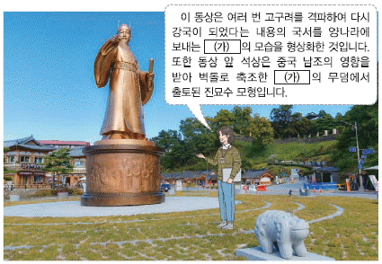
- 익산에 미륵사를 창건하였다.
- 사비로 천도하고 국호를 남부여로 고쳤다.
- 지방에 22담로를 두어 왕족을 파견하였다.
- 평양성을 공격하여 고국원왕을 전사시켰다.
- 동진에서 온 마라난타를 통해 불교를 수용하였다.
(정답률: 74%)
6. (가) 인물에 대한 설명으로 옳은 것은? [3점]
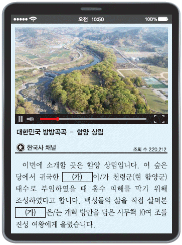
- 유식의 교의를 담은 해심밀경소를 저술하였다.
- 외교 문서 작성에 능하여 청방인문표를 작성하였다.
- 한자의 음훈을 빌려 우리말을 표기한 이두를 정리하였다.
- 신라 말의 사회상을 보여주는 해인사 묘길상탑기를 남겼다.
- 종파 간의 사상적 대립을 해소하기 위해 십문화쟁론을 지었다.
(정답률: 52%)
7. (가)~(다)를 일어난 순서대로 옳게 나열한 것은? [3점]
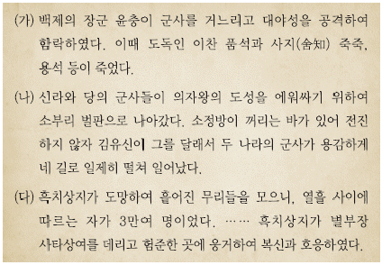
- (가) - (나) - (다)
- (가) - (다) - (나)
- (나) - (가) - (다)
- (나) - (다) - (가)
- (다) - (나) - (가)
(정답률: 70%)
8. 다음 정책을 실시한 왕의 재위 시기에 있었던 사실로 옳은 것은? [2점]
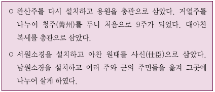
- 금관가야가 멸망하였다.
- 이사부가 우산국을 복속하였다.
- 조세를 관장하는 품주가 설치되었다.
- 관료전이 지급되고 녹읍이 폐지되었다.
- 인재 등용을 위한 독서삼품과가 실시되었다.
(정답률: 69%)
9. 다음 제도를 운영한 국가에 대한 설명으로 옳은 것은? [2점]
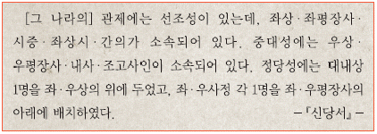
- 교육 기관으로 주자감을 두었다.
- 신라에 침입한 왜구를 격퇴하였다.
- 9서당 10정의 군사 조직을 갖추었다.
- 개국, 태창이라는 연호를 사용하였다.
- 왕족인 부여씨와 8성의 귀족이 지배층을 이루었다.
(정답률: 68%)
10. (가) 인물에 대한 설명으로 옳은 것은? [2점]
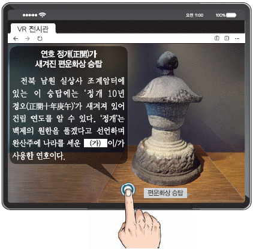
- 공산 전투에서 고려군을 크게 무찔렀다.
- 귀순한 김순식에게 왕씨 성을 하사하였다.
- 폐정 개혁을 목표로 정치도감을 설치하였다.
- 청해진을 근거지로 해상 무역을 전개하였다.
- 광평성을 설치하고 광치나, 서사 등의 관원을 두었다.
(정답률: 72%)
11. 다음 자료의 상황이 나타난 시기를 연표에서 옳게 고른 것은? [2점]
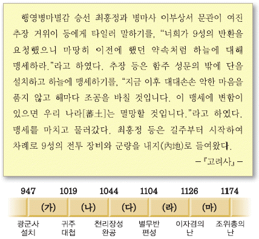
- (가)
- (나)
- (다)
- (라)
- (마)
(정답률: 55%)
12. 밑줄 그은 '이 왕'의 재위 시기에 있었던 사실로 옳은 것은? [2점]
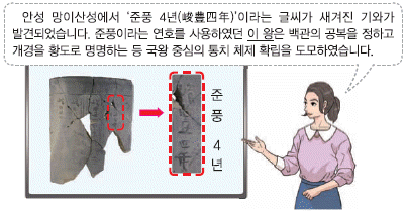
- 12목에 지방관이 파견되었다.
- 쌍기의 건의로 과거제가 시행되었다.
- 대장도감에서 팔만대장경이 간행되었다.
- 안우, 이방실 등이 홍건적을 격파하였다.
- 신돈이 전민변정도감의 책임자가 되었다.
(정답률: 71%)
13. 다음 상황이 나타난 시기에 볼 수 있는 모습으로 가장 적절한 것은? [1점]
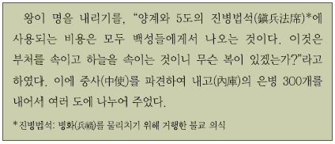
- 백동화를 주조하는 전환국의 기술자
- 신해통공 시행 소식에 기뻐하는 난전 상인
- 불법적인 상행위를 감독하는 경시서의 관리
- 담배, 인삼 등의 상품 작물을 재배하는 농민
- 물주로부터 자금을 조달받아 광산을 운영하는 덕대
(정답률: 62%)
14. 다음 자료에 나타난 상황 이후에 전개된 사실로 옳은 것은? [2점]
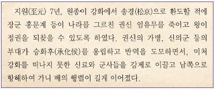
- 김윤후가 처인성에서 몽골군을 격퇴하였다.
- 묘청이 칭제 건원과 금국 정벌을 주장하였다.
- 김방경의 군대가 탐라에서 삼별초를 진압하였다.
- 최충헌이 봉사 10조를 올려 시정 개혁을 건의하였다.
- 경대승이 정중부 등을 제거하고 권력을 장악하였다.
(정답률: 48%)
15. 다음 대화에 해당하는 문화유산으로 옳은 것은? [3점]
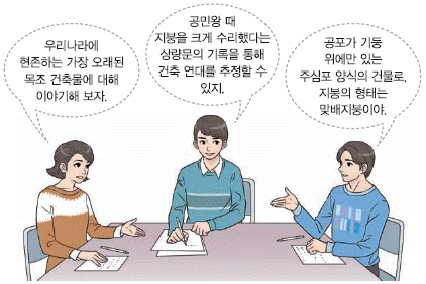
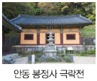
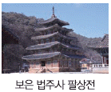
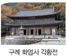
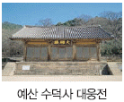
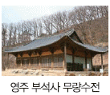
(정답률: 49%)
16. 밑줄 그은 '방안'에 해당하는 내용으로 옳은 것은? [2점]
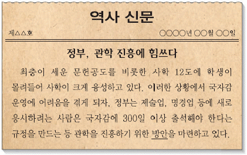
- 양현고를 두어 장학 기금을 마련하였다.
- 서원을 세워 후진 양성과 선현 제향에 힘썼다.
- 초계문신제를 시행하여 문신들을 재교육하였다.
- 만권당을 설립하여 원의 학자들과 교류하게 하였다.
- 경당을 설치하여 청소년에게 글과 활쏘기를 가르쳤다.
(정답률: 60%)
17. (가) 인물에 대한 설명으로 옳은 것은? [2점]
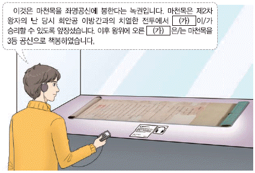
- 과전을 혁파하고 직전을 설치하였다.
- 최무선의 건의로 화통도감을 두었다.
- 어영청을 중심으로 북벌을 추진하였다.
- 왕권 강화를 위해 6조 직계제를 실시하였다.
- 궁중 음악을 집대성한 악학궤범을 편찬하였다.
(정답률: 71%)
18. (가) 사건에 대한 설명으로 옳은 것은? [2점]
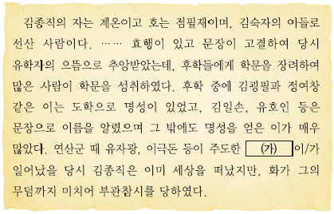
- 계유정난의 배경이 되었다.
- 조의제문이 발단이 되어 일어났다.
- 반정 공신의 위훈 삭제를 주장하였다.
- 윤임 일파가 제거되는 결과를 가져왔다.
- 동인이 남인과 북인으로 나뉘는 계기가 되었다.
(정답률: 69%)
19. (가) 기구에 대한 설명으로 옳은 것은? [2점]
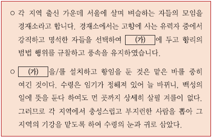
- 주세붕이 처음 설립하였다.
- 좌수와 별감을 선발하여 운영하였다.
- 중앙에서 교수와 훈도를 파견하였다.
- 대성전을 세워 성현에 제사를 지냈다.
- 흥선 대원군에 의해 대부분 철폐되었다.
(정답률: 58%)
20. (가)에 해당하는 문화유산으로 옳은 것은? [2점]
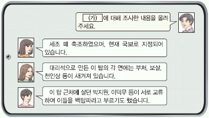
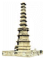
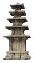
(정답률: 56%)
21. 밑줄 그은 '이 전쟁' 중에 있었던 사실로 옳은 것은? [2점]
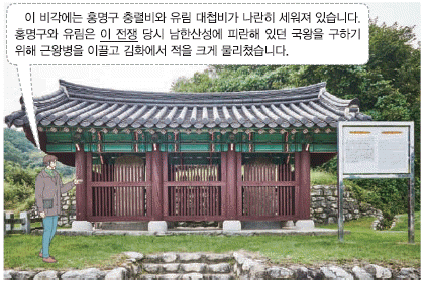
- 훈련도감이 설치되었다.
- 외규장각 도서가 약탈되었다.
- 곽재우가 의령에서 의병을 일으켰다.
- 강홍립이 이끄는 부대가 참전하였다.
- 김준룡이 광교산 전투에서 승리하였다.
(정답률: 40%)
22. (가), (나) 사이의 시기에 있었던 사실로 옳은 것은? [3점]
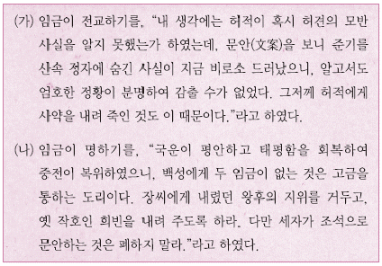
- 양재역 벽서 사건이 발생하였다.
- 송시열이 관작을 삭탈당하고 유배되었다.
- 자의 대비 복상 문제로 예송이 전개되었다.
- 정여립 모반 사건으로 기축옥사가 일어났다.
- 붕당의 폐해를 막기 위해 탕평비가 세워졌다.
(정답률: 50%)
23. 밑줄 그은 '이 법'의 영향으로 가장 적절한 것은? [1점]
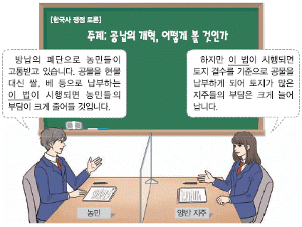
- 관청에 물품을 조달하는 공인이 등장하였다.
- 어염세, 선박세 등이 국가 재정으로 귀속되었다.
- 전세를 풍흉에 따라 9등급으로 차등 과세하였다.
- 양반에게도 군포를 징수하는 호포제가 시행되었다.
- 재정을 보충하기 위해 지주에게 결작이 부과되었다.
(정답률: 57%)
24. (가), (나) 왕에 대한 설명으로 옳은 것은? [2점]
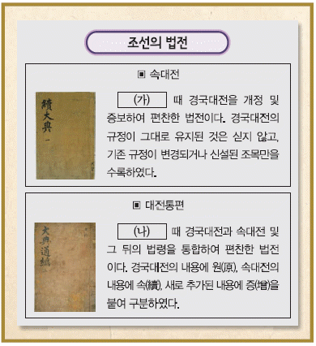
- (가) - 청과의 국경을 정한 백두산정계비를 세웠다.
- (가) - 왕실의 위엄을 높이기 위해 경복궁을 중건하였다.
- (나) - 이종무를 파견하여 대마도를 정벌하였다.
- (나) - 국왕의 친위 부대임 장용영을 설치하였다.
- (가), (나) - 나선 정벌에 조총 부대를 파견하였다.
(정답률: 65%)
25. (가) 인물에 대한 설명으로 옳은 것은? [2점]
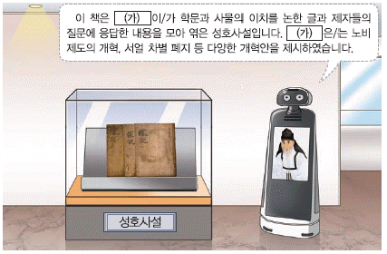
- 이벽 등과 교류하며 천주교를 받아들였다.
- 북한산비가 진흥왕 순수비임을 고증하였다.
- 동호문답에서 수취 제도의 개혁 등을 제안하였다.
- 가례집람을 지어 예학을 조선의 현실에 맞게 정리하였다.
- 곽우록에서 토지 매매를 제한하는 한전론을 주장하였다.
(정답률: 45%)
26. 다음 그림이 그려진 시기의 문화에 대한 설명으로 옳지 않은 것은? [1점]
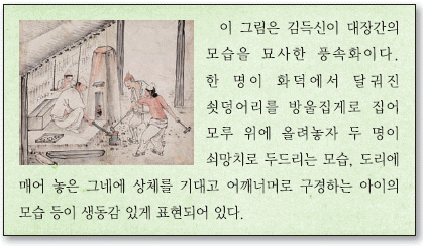
- 중인들이 시사(詩社)를 조직하였다.
- 양반의 위선을 풍자한 탈춤이 공연되었다.
- 춘향가, 흥보가 등의 판소리가 유행되었다.
- 금속 활자본인 직지심체요절이 간행되었다.
- 홍길동전, 박씨전 등의 한글 소설이 널리 읽혔다.
(정답률: 69%)
27. (가) 인물에 대한 설명으로 옳은 것은? [3점]
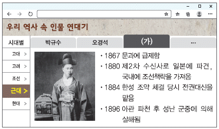
- 총리대신으로 갑오개혁을 주도하였다.
- 베델과 함께 대한매일신보를 창간하였다.
- 서양의 과학 기술을 정리한 지구전요를 저술하였다.
- 강화도 조약 체결의 전말을 기록한 심행일기를 남겼다.
- 유학생과 기술자들을 이끄는 영선사로 청에 파견되었다.
(정답률: 57%)
28. 밑줄 그은 '변란'에 대한 정부의 대책으로 옳은 것은? [1점]
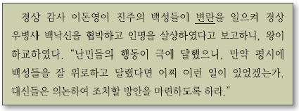
- 군 통수권 장악을 위해 원수부를 두었다.
- 각 궁방과 중앙 관서의 공노비를 해방하였다.
- 개혁의 방향을 제시한 홍범 14조를 반포하였다.
- 재정 문제를 해결하기 위해 당백전을 발행하였다.
- 삼정의 문란을 시정하고자 삼정이정청을 설치하였다.
(정답률: 66%)
29. 교사의 질문에 대한 학생의 답변으로 옳은 것은? [2점]
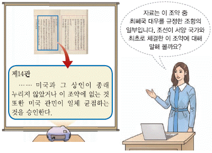
- 병인양요 발생의 배경이 되었어요.
- 갑신정변의 영향으로 체결되었어요.
- 통감부가 설치되는 결과를 가져왔어요.
- 거중 조정에 대한 내용이 포함되었어요.
- 메가타가 재정 고문으로 부임하는 계기가 되었어요.
(정답률: 58%)
30. (가) 종교에 대한 설명으로 옳은 것은? [2점]
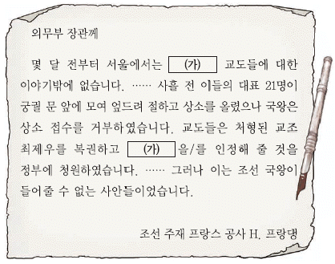
- 정혜쌍수와 돈오점수를 주장하였다.
- 포접제를 활용하여 교세를 확장하였다.
- 박중빈을 중심으로 새생활 운동을 추진하였다.
- 중광단을 조직하여 항일 무장 투쟁을 전개하였다.
- 제사와 신주를 모시는 문제로 정부의 탄압을 받았다.
(정답률: 40%)
31. (가) 단체에 대한 설명으로 옳은 것은? [2점]
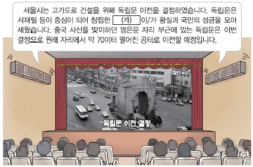
- 만세보를 발행하여 민중 계몽에 앞장섰다.
- 고종의 강제 퇴위 반대 운동을 전개하였다.
- 여성 권리 선언문인 여권통문을 공표하였다.
- 독립운동 자금 마련을 위해 독립 공채를 발행하였다.
- 만민 공동회를 열어 열강의 이권 침탈을 저지하였다.
(정답률: 56%)
32. (가)에 해당하는 지역을 지도에서 옳게 찾은 것은? [1점]
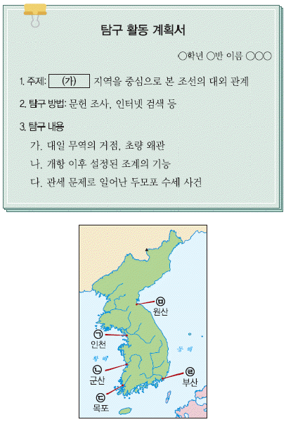
- ㉠
- ㉡
- ㉢
- ㉣
- ㉤
(정답률: 66%)
33. (가)~(다) 학생이 발표한 내용을 일어난 순서대로 옳게 나열한 것은? [2점]
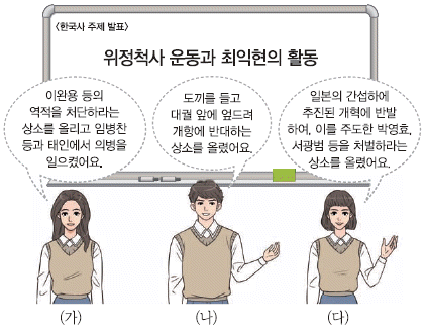
- (가) - (나) - (다)
- (가) - (다) - (나)
- (나) - (가) - (다)
- (나) - (다) - (가)
- (다) - (나) - (가)
(정답률: 53%)
34. 다음 자료를 활용한 탐구 활동으로 가장 적절한 것은? [2점]
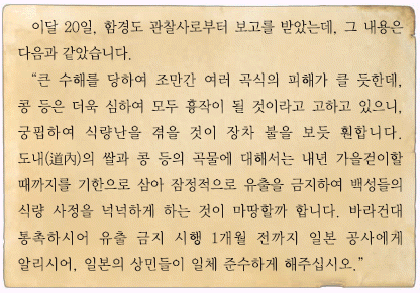
- 화폐 정리 사업의 결과를 분석한다.
- 산미 증식 계획의 실상을 조사한다.
- 조일 통상 장정 체결의 영향을 살펴본다.
- 토지 조사 사업의 추진 과정을 파악한다.
- 양지아문과 지계아문을 설치한 목적을 알아본다.
(정답률: 46%)
35. (가)~(라)를 작성한 인물에 대해 탐구한 내용으로 적절한 것을 보기에서 고른 것은? [3점](35번 공통지문 문제)
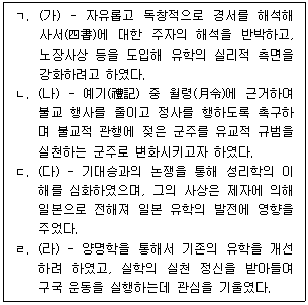
- ㄱ, ㄴ
- ㄱ, ㄷ
- ㄴ, ㄷ
- ㄴ, ㄹ
- ㄷ, ㄹ
(정답률: 38%)
36. (가)의 활동으로 옳은 것을 보기에서 고른 것은? [2점]
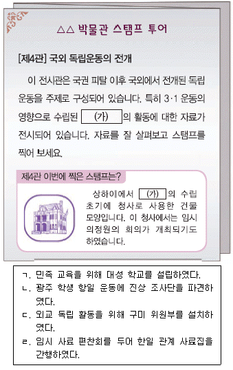
- ㄱ, ㄴ
- ㄱ, ㄷ
- ㄴ, ㄷ
- ㄴ, ㄹ
- ㄷ, ㄹ
(정답률: 53%)
37. 밑줄 그은 '특사'가 파견된 배경으로 가장 적절한 것은? [1점]
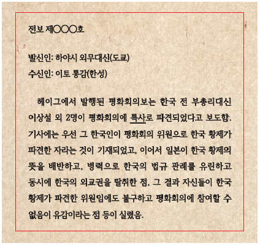
- 임오군란이 일어났다.
- 집강소가 설치되었다.
- 을사늑약이 체결되었다.
- 조선 태형령이 제정되었다.
- 대한 제국의 군대가 해산되었다.
(정답률: 70%)
38. 밑줄 그은 ㉠ 시기에 볼 수 있는 모습으로 가장 적절한 것은? [3점]
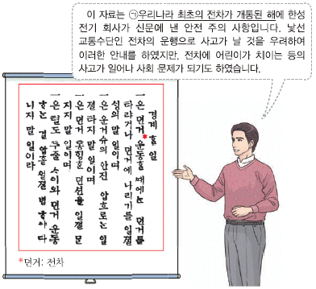
- 북학의를 저술하는 학자
- 대한국 국제를 반포하는 황제
- 거문도를 불법 점령하는 영국군
- 집현전에서 학문을 연구하는 관리
- 제너럴 셔면호를 불태우는 평양 관민
(정답률: 61%)
39. 다음 자료를 활용한 탐구 주제로 가장 적절한 것은? [1점]
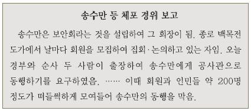
- 시진 상인의 상권 수호 운동
- 급진 개화파의 정치 개혁 운동
- 백정들의 사회적 차별 철폐 운동
- 농촌 계몽을 위한 브나로드 운동
- 일본의 황무지 개간권 요구에 대한 반대 운동
(정답률: 65%)
40. (가), (나) 발표 사이의 시기에 있었던 사실로 옳은 것은? [2점]
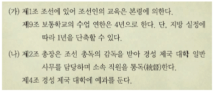
- 육영 공원이 설립되었다.
- 국문 연구소가 설치되었다.
- 교육 입국 조서가 반포되었다.
- 국민 교육 헌장이 발표되었다.
- 조선 민립 대학 기성회가 창립되었다.
(정답률: 42%)
41. 다음 자료에 나타난 사건의 영향으로 적절한 것은? [2점]
- 13도 창의군이 서울 진공 작전을 전개하였다.
- 복벽주의를 내세운 독립 의군부가 조직되었다.
- 김광제 등의 발의로 국채 보상 운동이 일어났다.
- 통상 수교 거부 의지를 담은 척화비가 건립되었다.
- 민족 유일당 운동의 일환으로 신간회가 창립되었다.
(정답률: 57%)
42. (가) 군사 조직에 대한 설명으로 옳은 것은? [2점]
- 홍범도가 총사령관으로 활약하였다.
- 영릉가 전투에서 일본군을 격퇴하였다.
- 대원 일부가 한국광복군에 합류하였다.
- 도쿄에서 2·8 독립 선언을 계획하였다.
- 상하이에서 대동단결 선언을 발표하였다.
(정답률: 55%)
43. (가) 인물의 활동으로 옳은 것은? [3점]
- 조선상고사를 저술하였다.
- 소설 상록수를 신문에 연재하였다.
- 저항시 광야, 절정 등을 발표하였다.
- 영화 아리랑의 제작과 감독을 맡았다.
- 별 헤는 밤, 참회록 등의 시를 남겼다.
(정답률: 60%)
44. 밑줄 그은 '이 시기'에 있었던 사실로 옳은 것을 보기에서 고른 것은? [2점]
- ㄱ, ㄴ
- ㄱ, ㄷ
- ㄴ, ㄷ
- ㄴ, ㄹ
- ㄷ, ㄹ
(정답률: 56%)
45. (가), (나) 사이의 시기에 있었던 사실로 옳은 것은? [2점]
- 카이로 선언이 발표되었다.
- 조선 건국 동맹이 결성되었다.
- 모스크바 삼국 외상 회의가 개최되었다.
- 좌우 합작 위원회에서 좌우 합작 7원칙을 합의하였다.
- 유엔 총회에서 인구 비례에 따른 남북한 총선거를 결의하였다.
(정답률: 44%)
46. (가) 지역에 대한 설명으로 옳은 것은? [3점]
- 조선 형평사 창립총회가 개최된 곳이다.
- 동학 농민군과 정부 사이에 화약이 체결된 곳이다.
- 서희가 소손녕과의 외교 담판을 통해 확보한 곳이다.
- 장수왕 때 국내성에서 천도하여 도읍으로 삼은 곳이다.
- 유엔군과 공산군 사이의 첫 번째 정전 회담이 열린 곳이다.
(정답률: 34%)
47. (가) 민주화 운동에 대한 설명으로 옳은 것은? [1점]
- 3선 개헌 반대 범국민 투쟁 위원회가 주도하였다.
- 이승만이 대통령직에서 물러나는 결과를 가져왔다.
- 신군부의 비상계엄 확대와 무력 진압에 저항하였다.
- 관련 기록물이 유네스코 세계 기록 유산으로 등재되었다.
- 4·13 호헌 조치에 반발하며 호헌 철폐 등의 구호를 내세웠다.
(정답률: 64%)
48. 다음 판결이 있었던 정부 시기의 사실로 옳은 것은? [2점]
- 한일 월드컵 축구 대회가 개최되었다.
- 농촌 근대화를 표방하는 새마을 운동이 추진되었다.
- 외환 위기 극복을 위한 금 모으기 운동이 전개되었다.
- 금율 거래 투명성을 실현하고자 금융 실명제가 시행되었다.
- 한미 자유 무역 협정(FTA) 체결에 반대하는 시위가 벌어졌다.
(정답률: 62%)
49. (가) 정부의 통일 노력으로 옳은 것은? [2점]
- 남북 기본 합의서를 채택하였다.
- 남북한이 유엔에 동시 가입하였다.
- 10·4 남북 공동 선언을 발표하였다.
- 남북 조절 위원회를 운영하기로 합의하였다.
- 남북 이산가족 고향 방문단의 교환 방문을 최초로 성사하였다.
(정답률: 50%)